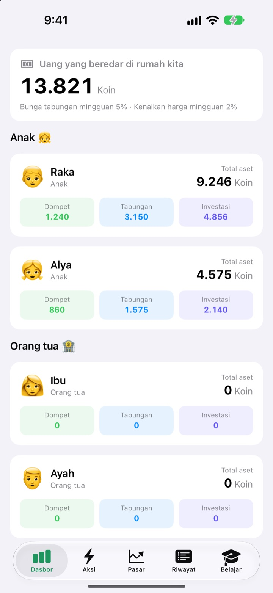
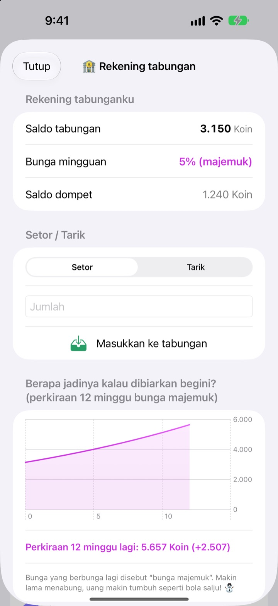
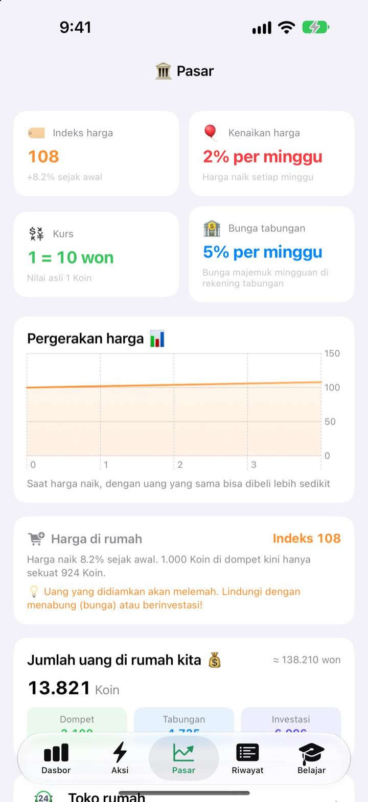
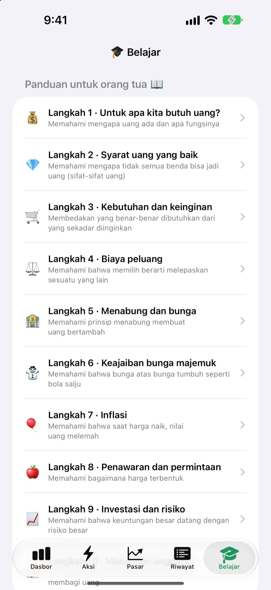

Hari uang saku jadi
pelajaran soal uang
Anda jadi bank sentral keluarga, anak-anak jadi nasabahnya. Mereka menerima uang saku dalam mata uang keluarga sendiri, membeli jajanan, melihat bunga masuk ke tabungan, dan ikut deg-degan melihat naik turunnya reksa dana latihan.
Semua fitur gratis. Tidak ada uang sungguhan yang berpindah tangan.

Kalau punya 1.000 koin, disimpan di mana?
1.000 koin yang sama ditaruh di dompet, tabungan, dan tiga reksa dana. Majukan satu minggu demi satu minggu dan lihat apa yang terjadi pada masing-masing. Semuanya mengikuti aturan yang sama dengan aplikasi.
"Ditabung nanti bertambah", apakah anak benar-benar paham?
Bunga, bunga majemuk, inflasi: makin dijelaskan, makin terdengar jauh. Di SukSuk Uang Saku, anak menghasilkan, membelanjakan, dan menunggu sendiri. Begitu mereka melihat tabungan minggu lalu sudah berbunga, uang saku berikutnya langsung masuk ke tabungan.
Kesabaran yang terlihat hasilnya
Uang di tabungan mendapat bunga majemuk setiap minggu. Anda yang menentukan sukunya, dan grafik menunjukkan jadi berapa dalam 12 minggu kalau tidak diambil.
Beberapa hari tidak membuka aplikasi? Saat dibuka, semua minggu yang terlewat dibayar sekaligus.

Lihat harga menggerus isi dompet
Tab Pasar menampilkan indeks harga keluarga, inflasi, suku bunga, jumlah uang beredar, dan harga reksa dana dalam satu layar. Saat harga naik, terlihat berapa banyak berkurangnya barang yang bisa dibeli dengan 1.000 koin di dompet.
Anak melihat dengan angka yang jelas: uang yang didiamkan menyusut, sedangkan uang yang ditabung atau diinvestasikan tetap bertahan.

Sepuluh obrolan untuk dilakukan bersama
Panduan untuk orang tua mengajak Anda melalui sepuluh langkah: kenapa kita butuh uang, kebutuhan dan keinginan, biaya peluang, menabung dan bunga, bunga majemuk, inflasi, investasi dan risiko, sampai menyusun anggaran.
Kalkulator bunga majemuk dan kalkulator eksperimen harga membuat Anda bisa mengubah angka dan melihat hasilnya bersama.

Mulai dalam tiga langkah
- 1
Beri nama mata uang
Kacang, Bintang, Koin, apa pun sebutan yang disukai keluarga.
- 2
Atur PIN orang tua
Empat angka. Hanya yang tahu PIN bisa memberi uang saku atau mengubah pengaturan bank.
- 3
Tambahkan keluarga
Tambahkan anak dan orang tua, beri uang saku pertama, dan selesai.
Apa ada di mana
- Dasbor
- Dompet, tabungan, dan investasi semua anggota dalam sekali lihat
- Aksi
- Beri atau kurangi uang saku, Barcode barang, Tambah barang, Undang anak, Mode ponsel anak, Pengaturan bank (perlu PIN orang tua)
- Pasar
- Indeks harga, inflasi, kurs, bunga tabungan, jumlah uang beredar, harga reksa dana
- Riwayat
- Setiap pergerakan uang menurut tanggal, anggota, atau jenis
- Belajar
- Panduan untuk orang tua sepuluh langkah, kalkulator bunga majemuk, kalkulator eksperimen harga
- 🐢 Reksa Dana Kura-kura Aman
- Naik turun harian kecil, naik pelan tapi pasti
- 🐰 Saham Kelinci Bertumbuh
- Naik turun, tapi terus tumbuh
- 🚀 Saham Roket Petualang
- Bisa melesat, bisa anjlok
Awalnya bunga tabungan 5% dan inflasi 2% per minggu. Keduanya bisa diubah di Mode orang tua, bagian Pengaturan bank. Kalau inflasi diatur 0%, harga tidak berubah.
Semua fitur gratis
Gratis
- Mata uang keluarga sendiri dan Mode orang tua yang dikunci PIN
- Memberi dan mengurangi uang saku, Toko rumah, dan bayar dengan barcode
- Tabungan dengan bunga majemuk mingguan
- Tiga reksa dana latihan dengan grafik imbal hasil
- Tab Pasar dan riwayat transaksi per tanggal
- Panduan untuk orang tua sepuluh langkah dan dua kalkulator
- Mode ponsel anak dan sinkronisasi iCloud
Dukung pengembang
- Kirim tip kecil berapa pun dari Pengaturan bank di Mode orang tua
- Tip tidak membuka fitur apa pun. Aplikasi tetap sama saja
Tanpa iklan, tanpa langganan. Tombol tip hanya ada di dalam Mode orang tua, jadi anak tidak pernah melihat tombol beli.
Pertanyaan
Apakah memakai uang sungguhan?
Tidak. Mata uang dan semua transaksi di aplikasi hanya pura-pura, untuk belajar. Tidak ada yang terhubung ke rekening bank, kartu, atau uang tunai sungguhan.
Bagaimana melihat catatan yang sama di ponsel anak?
Perangkat yang masuk dengan akun iCloud yang sama menyinkronkan catatan keluarga secara otomatis. Pastikan iCloud aktif di Pengaturan > Akun Apple > iCloud. Di tab Aksi, lewat Undang anak, Anda bisa membuat undangan kode QR untuk dipindai anak dengan kamera. Tanpa iCloud, data hanya tersimpan di perangkat itu.
Apa itu Mode ponsel anak?
Mode ini mengubah ponsel anak menjadi layar khusus untuknya. Anak hanya melihat dompet, investasi, riwayat, dan pelajarannya sendiri, dan untuk keluar perlu PIN orang tua.
Saya lupa PIN orang tua.
PIN hanya disimpan di perangkat, jadi pengembang pun tidak bisa memulihkannya. Menghapus lalu memasang ulang aplikasi memungkinkan Anda mengatur dari awal, tetapi data yang ada juga ikut terhapus.
Bagaimana cara kerja bunga tabungan?
Setiap minggu, bunga majemuk otomatis ditambahkan ke saldo tabungan. Sukunya Anda atur di Mode orang tua, dan minggu yang terlewat diselesaikan saat aplikasi dibuka berikutnya.
Apakah harga reksa dana mengikuti pasar sungguhan?
Tidak. Harga reksa dana adalah data latihan yang berubah sekali sehari di dalam aplikasi. Makin berisiko, makin besar naik turunnya. Ini bukan produk keuangan sungguhan.
Kenapa harga naik?
Supaya anak merasakan inflasi, indeks harga keluarga naik sedikit setiap minggu. Ubah lajunya, atau atur ke 0% untuk mematikannya, di Mode orang tua bagian Pengaturan bank. Kalau harga jajanan dan mainan di Toko rumah ikut dinaikkan sedikit, pelajarannya makin melekat.
Bagaimana menghapus semuanya?
Menghapus aplikasi akan menghapus data di perangkat. Untuk data yang tersinkron ke iCloud, buka Pengaturan > Akun Apple > iCloud > Kelola Penyimpanan, lalu hapus data aplikasi ini.
Apakah informasi keluarga saya dikirim ke mana-mana?
Tidak. Tidak perlu daftar, dan semua data tetap di perangkat Anda dan di akun iCloud Anda sendiri. Pengembang hanya menerima masukan yang Anda kirim sendiri dari Mode orang tua, serta statistik penggunaan anonim dan laporan kerusakan.
Bisa dipakai di perangkat apa?
iPhone dengan iOS 17.0 atau lebih baru.
Ada pertanyaan, kendala, atau ide? Tulis ke leeo@kakao.com. Sertakan model perangkat dan versi iOS agar kami bisa membantu lebih cepat.